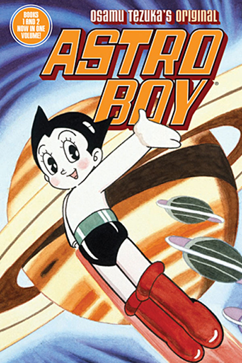

A história do anime se inicia no século XX, onde as primeiras animações começaram a ser produzidas, no início, as animações eram em preto e branco e feitos a mão e detalhando cada quadro individualmente.
A primeira animação japonesa foi produzida no início do século XX no ano de 1907, chamada de “Katsudo Shashin” desenvolvida por Junichi Kouchi, considerado um dos “Pais dos anime”. Os primeiros animes eram feitos com produção de curtas-metragens em celulóide, que por muitas vezes, focavam em trazer uma animação mais humorística, como por exemplo o curta-metragem “Namakura Gatana”, também desenvolvido por Junichi Kouchi, lançada no ano de 1917, essa obra é reconhecida como um marco crucial na história do anime, dando início na jornada do mesmo.
A partir dos anos 20 e 30, os animes se tornaram muito populares entre a população japonesa, e muitos desses animes eram desenvolvidos baseados em Mangás (histórias em quadrinhos japonesa) populares na época, essa prática que se iniciou no século XX permanece até os dias atuais, sendo todos os animes baseados no Mangá da mesma história.
Após a Segunda Guerra Mundial, as animações japonesas foram muito influenciadas pelas animações do Ocidente, se baseando em animações, por exemplo, da Disney, mas colocando características diferentes nos personagens, deixando-os mais expressivos e arredondados.
A partir dos anos 60, os animes cresceram de forma exponencial, tendo um estilo único de animação, com personagens de olhos grandes, boca grande e cabeça grande. Contendo filmes em formato de anime e lançados em episódios, essas animações se tornaram muito populares no Japão sendo exibidas na TV japonesa e até mesmo sendo exibidas para o público Ocidental, especialmente para os Estados Unidos, um exemplo foi “Astro Boy” que teve um amplo reconhecimento internacional na época.
Nos anos de 1970 e 1980, houve uma crescente dos gêneros e estilos de animes. Gêneros como ação, fantasia, ficção científica, romance, entre outros, começaram a ser produzidos em formato de anime, destacando-se obras como Dragon Ball, Cavaleiros do Zodíaco e Sailor Moon. Nota-se também a evolução das animações ao mesmo tempo que o público também cresceu. O anime de Dragon Ball tornou-se tão influente na indústria dos animes que introduziu vários outros animes sobre artes marciais, contribuindo para mais reconhecimento dos animes e cultura pop japonesa. Os animes ficaram tão populares, que uma subcultura foi criada no Japão, comumente chamada de Otaku e que ficou internacionalmente conhecida, permanecendo até os dias atuais.
Com a criação da internet, os animes ganharam uma enorme visibilidade e um crescimento demasiado de público, já que há o fácil acesso aos animes, como por exemplo, aplicativos de streaming e sites especializados que proporcionam filmes e séries de anime com diversos gêneros e assuntos complexos que exploram diversos temas. As produções estão cada vez mais sofisticadas e com animações de alta qualidade. Vale ressaltar que, com esse reconhecimento internacional, foram criados vários eventos de anime presenciais, proporcionando mais dessa cultura em vários países do mundo.
Página de perfil: Com uma lista dinâmica dos animes que assistiu, podendo adicionar, editar e filtrar.
Página de dashboard: Ter uma dashboard com dados referentes a quanto tempo você assistiu algum anime, podendo filtrá-la do jeito que desejar.
Basta você
OU